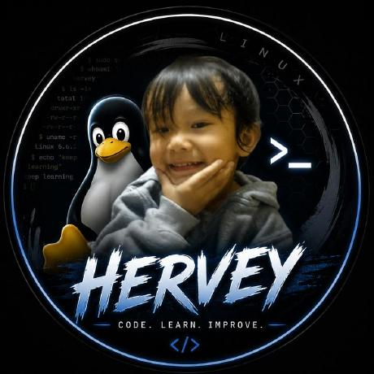
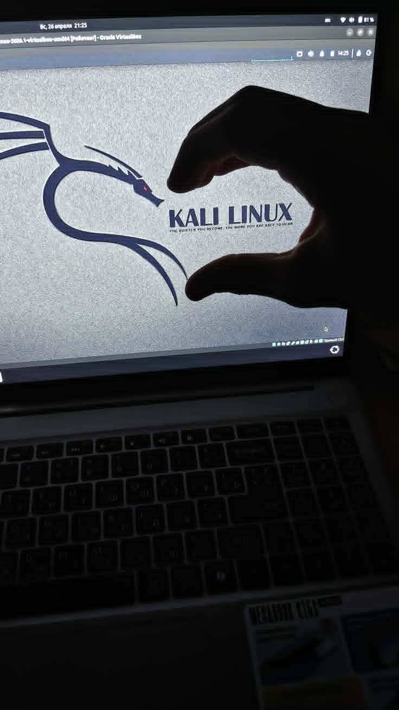

About me
I like knowing what’s happening under the screen.
I’m Hervey James F. Temple. I’m 15, in Grade 8, and from Davao City, Philippines. I like computers and learning how their different parts work together.

A computer is more than what’s on the screen. I’m curious about how the operating system, hardware, software, and network fit together.
I’m learning web development and programming, and I like troubleshooting computer problems. Linux and networking interest me because they show me more of how computers actually work. I’m also learning cybersecurity basics and the importance of practicing responsibly.
I’m still a student and still learning. I use this site to keep the things I’ve tried and the topics I want to understand better in one place.
What I’m into lately
Making websites, getting more comfortable with Linux, and learning the basics of programming and networks.
See what I’m learning